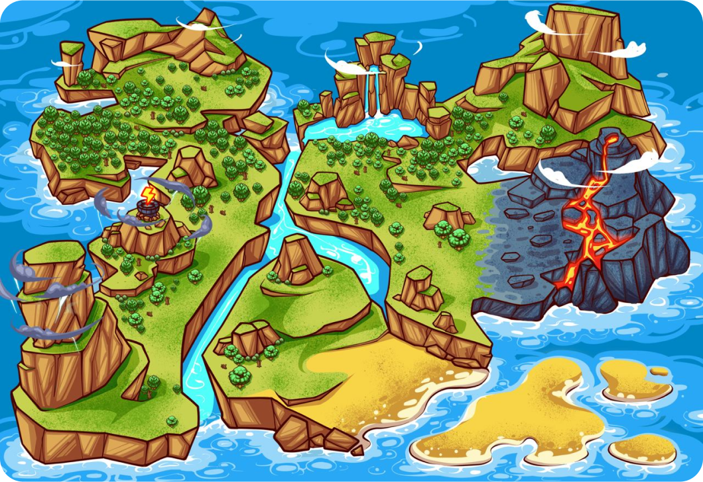

Pikamoon™ | Official Site
What is Pikamoon?
Pikamoon is a GameFi token that powers the Pikaverse, a metaverse comprised of four lands where players capture Pikamoons to Battle monsters and go up against the dark gods ruling and destroying these lands.
Your goal in the game is to travel across four lands of Pikaverse and defeat their respective rulers.
The game and the characters have taken direct inspiration from Pokemon, and each “Pikamoon” is reminiscent of a pocket monster. And like Pokemon, Pikamoon will also feature turn-based combat.
With each turn, you will be given a chance to attack or heal. And each win will give your Pikamoon experience points. You can use these points to upgrade your Pikamoon or buy in-game assets from the Pikamoon marketplace.
Marketplace
Join millions of Pikamooners to buy, sell and trade various categories of assets in the in-game marketplace.
Fortify your avatar by getting weapons, spells, and health.
Most importantly, get some precious land to start building your massive empire.
Pikamoon Price Prediction 2024
Play to earn cryptos have been hit-and-miss over the past year. 2022’s bear market, as well as other detrimental factors – like less focus on gameplay and more on earning mechanics – have started to give P2E games a bad rep.
Pikamoon is one of the few novel projects aiming to fix this issue with its “photo-realistic” take on the metaverse. The official whitepaper makes the planned metaverse look colorful.
- A robust roadmap
- Good looking gameplay
- GameFi and DeFi mechanics are currently growing
- Verified and Audited Project
Pikamoon Price Prediction 2025
In 2025 Pikamoon will move ahead with its roadmap. And the closer it is to realizing its original game, the closer it will get to competing with the likes of Axie Infinity. However, we believe that going against a well-established project like Axie Infinity may be difficult for it as that would require a parabolic increase.
And since Pikamoon doesn’t have the same virality of meme coins as of now, a more conservative PIKA price prediction could be $0.0005 by the end of 2025.
Pikamoon Price Prediction 2030
2030 will bring more order to the volatile crypto space – hopefully. That will assert more utility-based tokens to rise – Pikamoon included. Another factor that may come into play in pushing PIKA’s growth would be the gameplay. If PIKA’s gameplay turns out to be more addicting than Axie Infinity, it could have high growth potential.
Add pikamoon Era Alpha Mainnet on MetaMaskYou will need to connect pikamoon Era alpha mainnet to your MetaMask. To do this, go to your MetaMask and click on the network button, then “Add network”. Then, click “Add a network manually”. Add the following information and click “Save”:
However, flipping Axie Infinity would still be difficult as that would require a parabolic increase of 120,000% from PIKA’s 2025 highs. The price explosion of AXS token in the last crypto bull run may have been a one-off for play to earn tokens – although meme coins like Pepe (PEPE) have had similar success in 2023.
- Your NFT is your gateway to the Pikamoons metaverse.
- New RPC URL: https://mainnet.era.pikamoon.io
- Each region has three Gods with special powers, these Gods shaped the continent of Dreva!
- By holding more $PIKA, you’ll be able to mint a greater number of NFTs
How to Buy Pikamoon – Full Guide
For investors that opt to buy Pikamoon tokens the steps are:
Best pikamoon Airdrop Routes?
- Step 1 – Set up a Web 3 Compatible Wallet
- Step 2 – Buy ETH
- Step 3 – Go to the Official Website
- Step 4 – Buy PIKA Tokens
The first step is to set up a Web 3 compatible wallet. Pikamoon recommends Metamask.
ETH must be used to swap for PIKA tokens. So, make sure you have enough ETH tokens in your wallet. For those who don’t have Ethereum tokens, “buy crypto with card” is also an option.
Go to the official website – Pikamoon.io – and connect your wallet.
The final step is swapping ETH for PIKA tokens. The tokens can be claimed after the cliff period post-TGE is finished.
Conclusion
Pikamoon is a P2E game inspired by Pokemon. This game features a metaverse and characters that players can capture and use for battle across the three lands Pikaverse is comprised of.